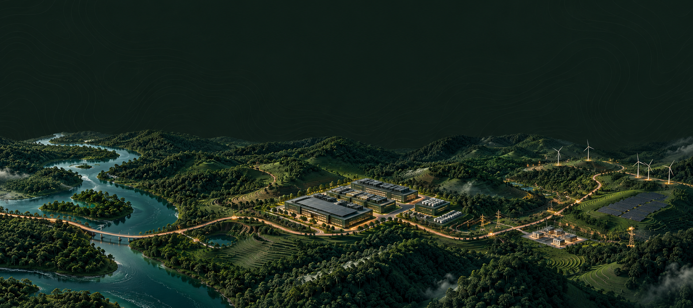

dataterra.
Before you build
Good decisions
start with
the territory.
Understand the local context
before committing capital.
Meet DataTerra
dataterra.
Territorial intelligence
for data centers.
dataterra.
Explore the territory
Four pillars.
A clearer view.
Water stress
Energy capacity
Connectivity
Social &
territorial risk
territorial risk
Preliminary screening.
Transparent assumptions.